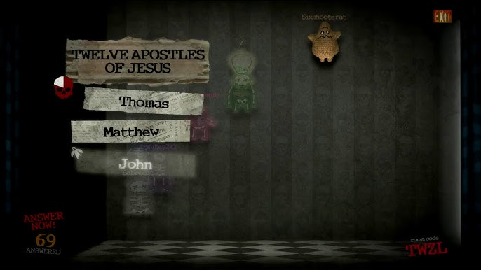
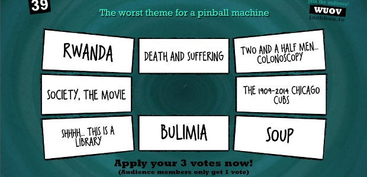

Jackbox games have recently become a popular choice for people looking for a casual party game to play with their friends. These games have players connect (usually on their phones) via a website to play the game while the main information is streamed on a shared screen (usually a TV). The games are interactive and often humorous.
I was asked to talk about my experience playing in a specific class, but I didn’t have the chance to play then, so I will speak on my previous experiences playing Jackbox with my friends. The games I played were Trivia Murder Party and Quiplash.
Trivia Murder Party is a game where players answer trivia questions to stay alive and reach the end of the game. If a player answers a question incorrectly, they have to play a minigame to decide whether they live or die. These minigames take a few forms, with some letting more players live than others and some giving permanent debuffs to the players who survive. After some questions, everyone goes to the final phase. In this final battle, players get a series of categories and a few options with each category; for each option, they must decide whether it belongs or does not belong to the category. Each correct choice allows them to move one space, but ghosts get an extra option that they can get right. Alive players get a head start, though.

The final phase in Trivia Murder Party.
I had fun playing Trivia Murder Party, as there are a lot of questions where the correct answers are very unclear. Due to the nature of the game, though, it’s possible to play and just focus on your own answers—if you just answer everything correctly, you don’t really have to worry about what everyone else is doing. As such, having an audience doesn’t really change how the game is played in my opinion.
In comparison, Quiplash is a much more social game. In Quiplash, all players write answers to a shared prompt, and all the players vote on the funniest answer. Players score points based on how popular their answers are, and the player with the most points at the end wins.

A voting phase in Quiplash.
This game was difficult for me. I’m not very clever and sometimes have a hard time coming up with things that will appeal to the group. However, this is a game where playing with an audience does significantly affect the game. The audience members can also vote—although with less freedom—on players’ answers, so to score points, it’s important to write things that will be entertaining to everyone involved. Also, the game is much more social than Trivia Murder Party, and a lot of the enjoyment comes from putting things out and seeing how other people react instead of trying to just play the game to the best of your ability.